Change the theme. Keep your apps open.
Changing a theme on Renku OS used to mean restarting your applications to see all of it. This work makes controls and fonts change in place, gives themes light and dark versions that can switch by the time of day, lets apps follow along, and revives a menu effect from BeOS.

 Haiku Dark
Haiku
Haiku Dark
Haiku
Drag across the picture. One command switches between these two, with every window left open. The windows are the same ones, on Renku OS in a virtual machine.
Get Power Theme 0.5
Dano, Tidy, light and dark versions, the daily schedule, Haiku Dark, Renku Light, the dark icons and BeOS-style tabs are in this release, for Haiku R1/beta6 and later and Renku OS on x86_64.
pkgman install ./powertheme-0.5-1-x86_64.hpkg
Then open Power Theme, click Build add-ons… once and apply a theme. The Renku changes described below are separate, and still in review.
Two new looks
Dano brings back the controls of BeOS R5.1 "Dano", redrawn from screenshots of a running system: white buttons with a soft shadow, a default button on a blue plate, menu fields with a blue tab, and double scroll bar arrows. It only sets the controls, colours and fonts, so it keeps the window borders you already have.
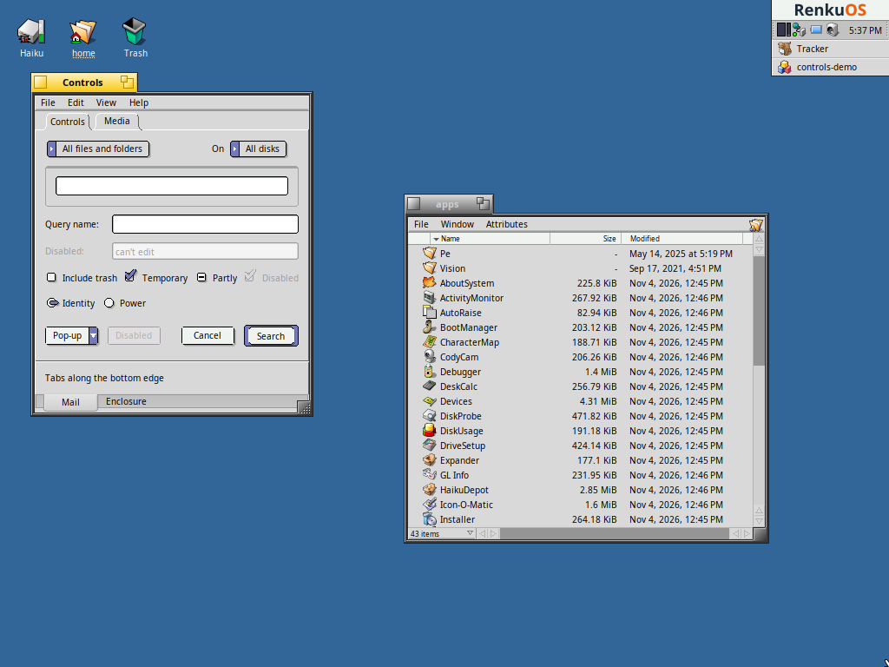
Tidy and Tidy Dark follow the mockups by anon40228759 in a thread on Haiku's forum: a rounded tab with its title in the middle, a thin frame, soft menu bars, pale column headers, and slim scroll bars that are blank when there's nothing to scroll. They're one row in Power Theme, with a Mode menu.
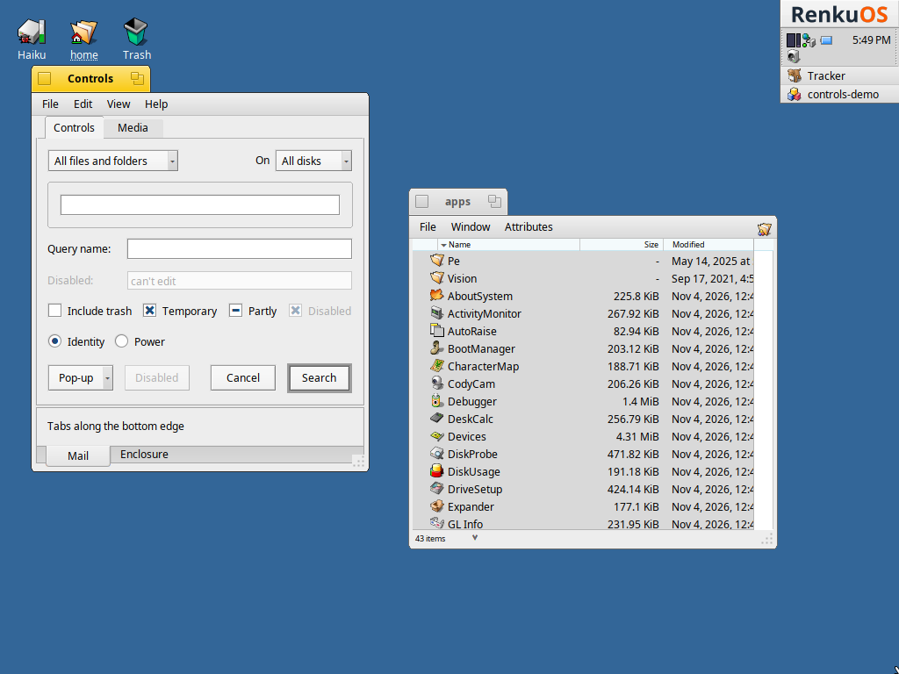
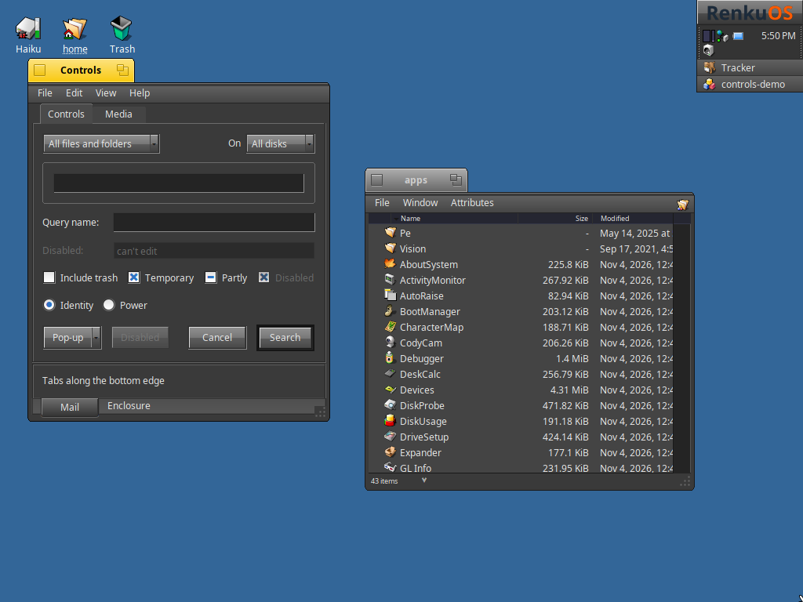
Tidy can't do everything in the mockups. Tracker's folder path, row spacing and a new HaikuDepot are changes to those applications, and without compositing the rounded corners aren't anti-aliased.
Dano also goes well with ZSnake. This one needs the pending Renku changes, and was forced on in a test build of libbe for the picture.
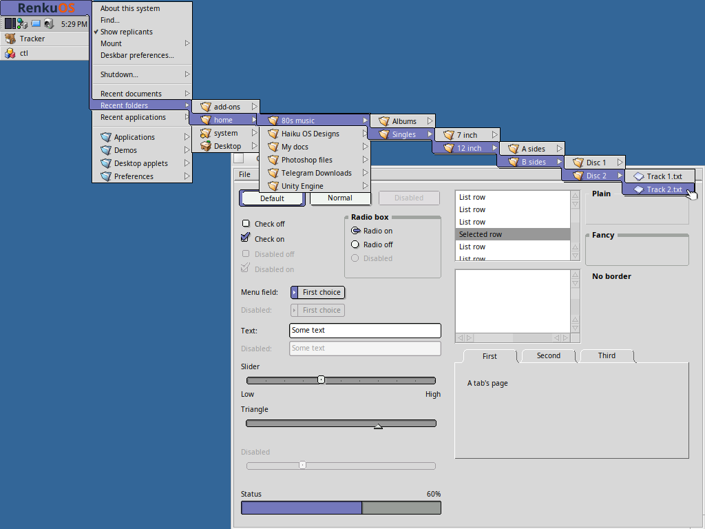
Released in Power Theme 0.5.
Controls change live
Choosing a new control look now reaches every running application: buttons, sliders and menus redraw and reflow on the spot. An old look stays loaded until its app quits, because another thread may still be using it. Each look loads once, so the cost depends on how many different looks you use, not how many times you switch.


In review: #284 is ready, and #285 is a draft stacked on it.
Fonts change live
Views follow the system font unless they chose their own, with family and size tracked separately. An app that set its own size keeps that size and still follows the family. A font it set outright stays as it is.


Light and dark versions
A theme can now say it's one version of another. The two appear as one row in Power Theme, with a Mode menu. Flat, Haiku, Renku and Reactionary ME come as pairs, and Haiku Dark is black and yellow, like DarkFlat.
variant of = Haiku mode = dark powertheme --mode=toggle
Released in Power Theme 0.4.
The Renku theme
Renku OS's own look now comes in both modes, in the colours of its website. Renku is night blue and indigo with warm white text. Renku Light turns that over to washi paper and indigo ink. Both use fire orange for what's active or chosen, with Smoke window borders, flat controls and a wallpaper with 連句 ("renku") in outline. Renku uses the dark Haiku icons, and Renku Light uses Haiku's own.
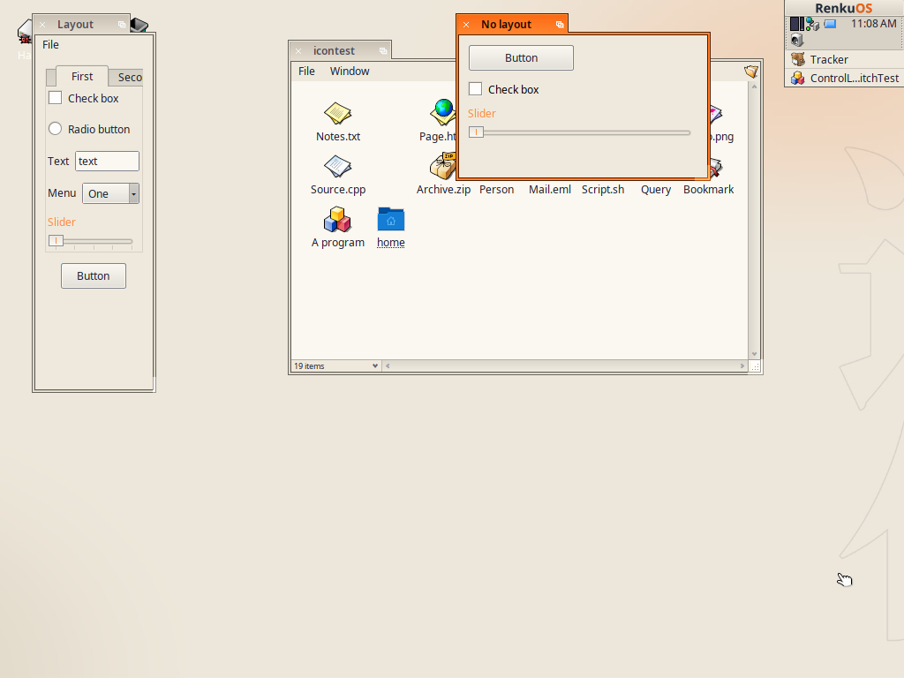
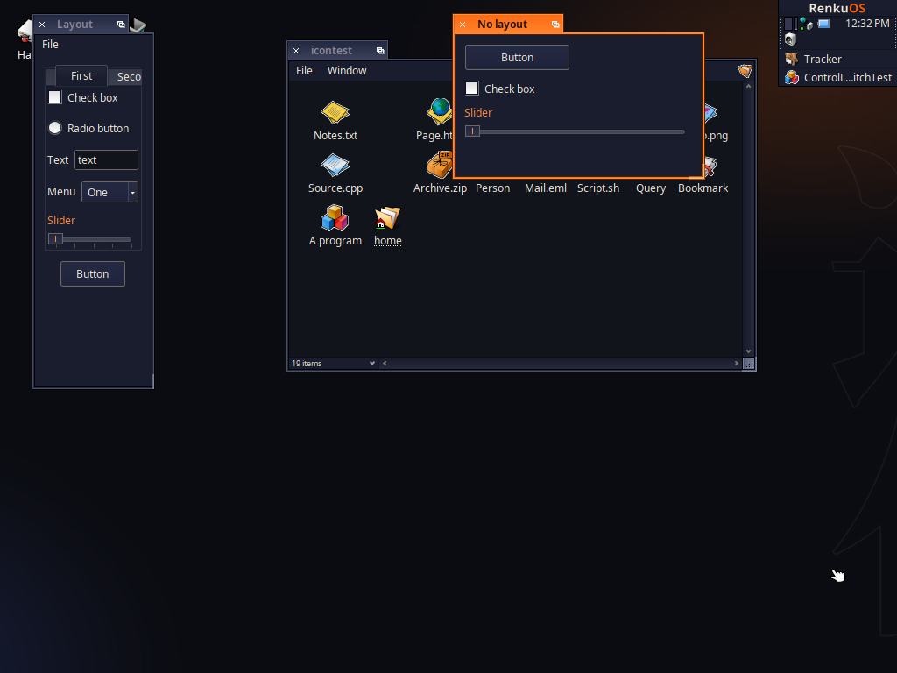
Renku Renku LightDrag across the picture. These are from the test VM, with its fallback fonts in place of IBM Plex.
powertheme --apply=Renku --mode=light
Released in Power Theme 0.4. The window borders and controls come from Build add-ons…, which builds them for your system.
BeOS-style tabs
Window borders can now draw a classic BeOS tab, even in a theme that wasn't made for one. It's as wide as the title and sits on top of the frame, with close on the left and zoom on the right. Shift-drag it to slide it along the window, and stacked windows share the width. Reactionary is the first to support this, here in its Windows ME look.
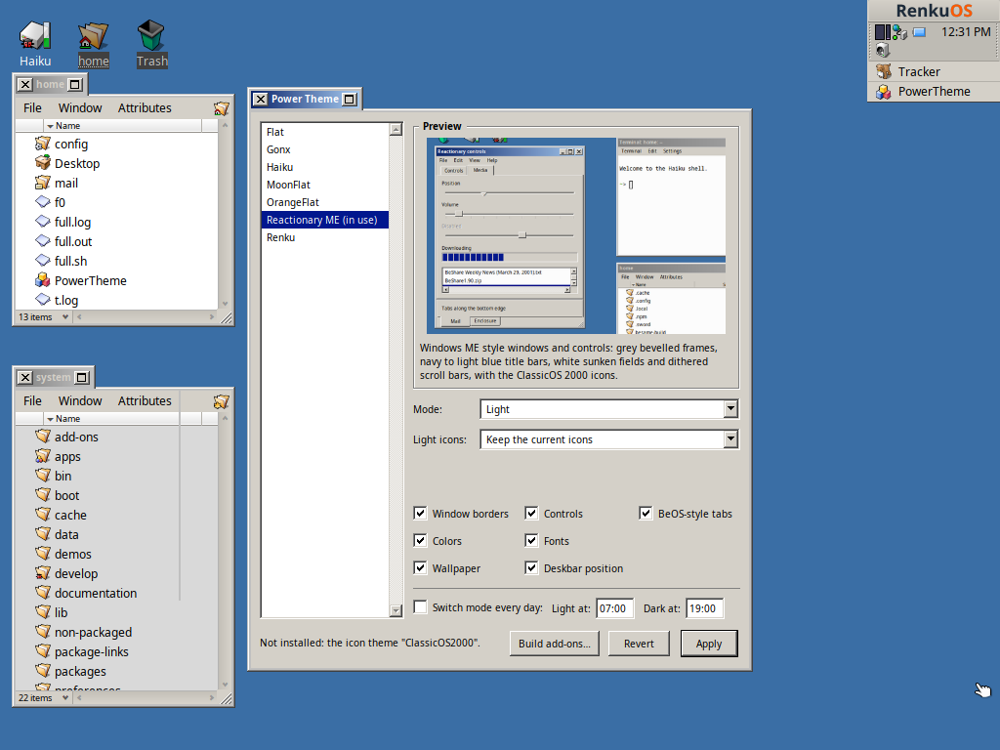
powertheme --beos-tabs=on
Released in Power Theme 0.4. It's optional, and needs Build add-ons… run again. A slid tab goes back to the start when window borders reload, until #297 lands.
Switching by the time of day
Pick a time for light and a time for dark, and the theme in use follows them every day. A computer started at night comes up dark, and a theme you switch by hand stays until the next scheduled time.


powertheme --schedule=07:00,19:00
Released in Power Theme 0.4.
Dark icons
Each version of a theme can have its own icons, chosen in the window or from the command line, and a mode switch brings them along. Nothing changes unless you've applied icons with a theme, so icons you set separately stay where they are.
powertheme --light-icons=haiku --dark-icons=haiku-dark
Haiku icons (dark)
Haiku Dark and Renku use dark versions of Haiku's own icons, with the same shapes. Each colour moves onto a hand-picked ramp with deep shadows and bright highlights, folders turn a rich burnt orange, and a thin, soft white outline lifts each icon off a dark background, kept even at small sizes. Power Theme recolours the running system's icons when it applies them, so new file types and system updates are covered, and Revert restores the originals exactly.
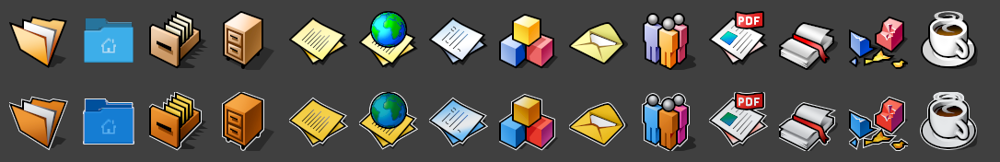
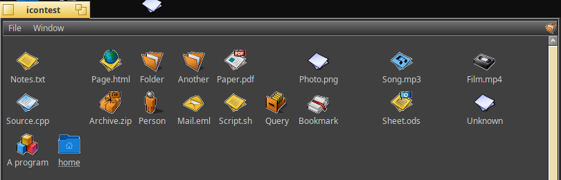
Dark icon themes from elsewhere, such as Breeze Dark, can be installed and chosen too. Power Theme now reads the stylesheet colours they rely on, which its SVG renderer used to ignore.
Released in Power Theme 0.4.
Apps can follow along
Like prefers-color-scheme on the web, this gives an app one question to ask and a message telling it when to ask again, so it can swap its icons or artwork. The answer comes from the colours actually on screen, so it can't disagree with them and existing themes work unchanged.
void MyView::MessageReceived(BMessage* message)
{
if (message->what == B_COLORS_UPDATED)
_UseArtwork(ui_is_dark() ? fDarkIcon : fLightIcon);
BView::MessageReceived(message);
}


Open for review: #289. No bundled app uses it yet.
The Deskbar logo
The Deskbar's navy logo was hard to see on dark menus. It now has a light version and swaps by comparing the menu's text with its background.


Open for review: #288.
ZSnake menus
BeOS 5.1 (Dano) hid a menu effect called ZSnake in its Menu preferences: the selection becomes one outlined path from a menu's item, along the open submenu's edge, to the submenu's selected item. This brings it to Renku, drawn as Dano drew it and compared pixel for pixel with screenshots of Dano. Menus with it off look as they did before.
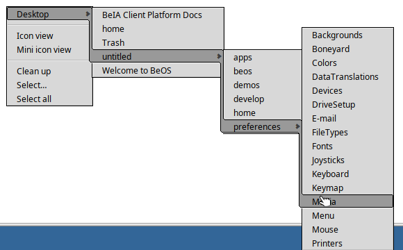
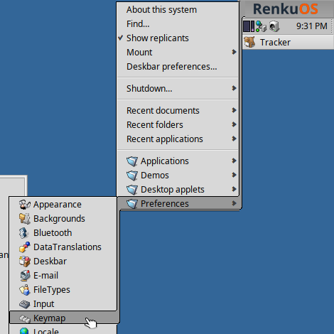
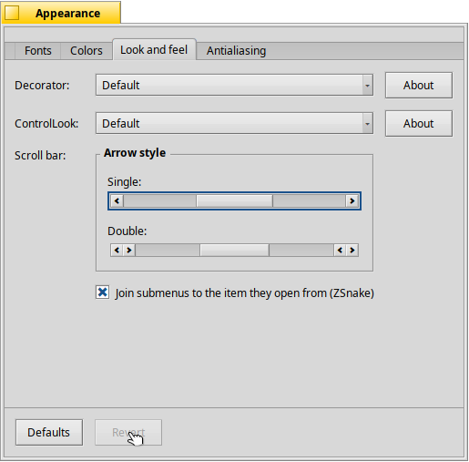
In review: #279 is ready, and #280 and #281 are drafts stacked on it.
Tracker keeps up
Tracker now follows along too, with its windows left open. When a file type's icon changes, every file showing it redraws, including types that take their icon from a parent type like image. When the system font changes, rows, columns, the title bar and truncated text all fit themselves to it again.
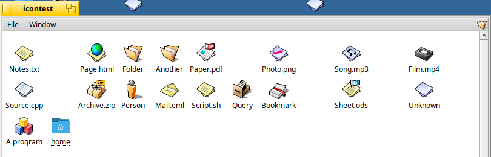
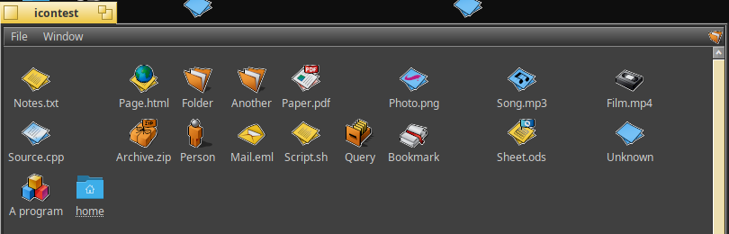
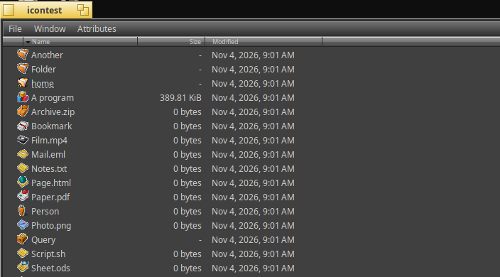
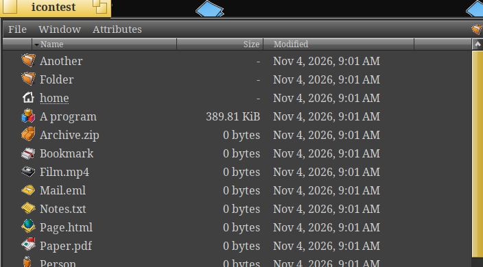
In review: #292 for icons and #293 for fonts, which needs the font changes above.
Also in review: #295 keeps check box labels readable on dark panels, and #296 keeps desktop labels readable on a plain pale desktop.
Older systems still work
Power Theme checks the running system for these changes. Where they aren't there, it applies themes as before and asks you to restart your apps, instead of promising something the system can't do. Light and dark versions and the schedule work there too.
How it was tested
On full x86_64 Renku images in VirtualBox, and on Haiku R1/beta6. The Renku changes also pass their project's build and boot checks on x86_64 and x86_gcc2.
| Result | What was done |
|---|---|
| 2,300 swaps | Control looks switched as fast as possible, with four threads using the look and windows redrawing every 16 ms. No crashes. |
| 480 updates | System font changes, with app_server's font state checked for stability throughout. |
| 0 and 3 pixels | Difference between a window switched live and one started fresh, for Be and Flat. The comparison also caught a slider that was 1,559 pixels off, since fixed. |
| Live switch | The schedule changed theme and icons at the set minute, with Power Theme open. It also caught up at start, kept a manual change and restarted after a reboot. |
| The 0.5 package | Installed on Haiku R1/beta6 on a 16 GB disk and on a stock Renku nightly, with add-ons built on each. Dano and the Tidy pair applied and reverted on both, with no crashes. On beta6 it also went through modes, the schedule, dark icons, BeOS-style tabs and a reboot. |
| Exact revert | After 20 rounds of applying and reverting icons, the file count stayed the same. A separate check found every icon restored exactly. |
What isn't finished
- The Renku changes are awaiting review, so live controls, fonts and Tracker updates need a build that has them. On a stock system, running apps need a restart to pick up a new theme.
- None of it has run on real hardware.
- The dark icons' outlines can still show slight stair-stepping on diagonals at small sizes, as any thin line does at low resolution.
- Until the Tracker changes land, open windows show some new icons only after Tracker restarts.
- Application icons don't change at all, as they're part of the applications, so they keep their original colours next to the dark icons.
- Tracker sometimes crashes in its Attributes menu code when a script resizes a window just after a restart, with Haiku's icons or the dark ones, and with or without the Tracker changes. The cause is unknown, and it's reported as #294.
- ZSnake's app_server change (#280) hasn't run on a built image yet, and one crash of a test Deskbar on closing its menu was seen once.
- While a schedule is on, its background process appears as a second Power Theme entry in the Deskbar.
- Switching modes in Reactionary ME can leave small marks in title bars until they next redraw. The Haiku theme's decorator didn't show this.
- Icon swapping was tested on Renku only. Beta6 got the themes, window and schedule, as its test machine has almost no free disk.
- During testing, a test VM's kernel panicked once in the file system while reading an attribute. The file wasn't one Power Theme normally writes, and it didn't happen again in 20 stress rounds, but the cause is unknown.